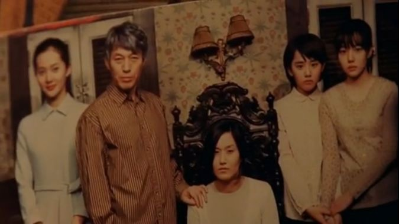
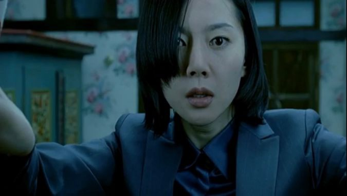

| 고전소설 <장화홍련전> | 영화 <장화, 홍련> | ||||
|---|---|---|---|---|---|
| 새어머니가 새로운 가족 구성원으로 들어 오게 된 경위 | 친어머니는 차녀인 '홍련'을 낳다가 죽는데 이는 계모 '허씨'가 장화홍련의 집으로 오게 되는 발판이 된다. |
1) 친어머니의 질병이 간호사인 새어머니 '은주'를 수연과 수미의 집으로 오게 만드는 원인이 되었다고 할 수 있다. 2) 친어머니가 질병과는 독립적으로 '무현'이 외도로 '은주'를 아내와 딸들이 살고 있는 집으로 데려왔다고 한다면 이는 고전소설과의 차별성이라고 할 수 있다. 친어머니가 새어머니가 집으로 오게 된 경위에 영향을 미치지 않고, 무현의 외도로 새어머니와 수연, 수미와의 만남이 이뤄지기 때문이다.  '수미'네 가족과 새어머니 |
|||
| 새어머니로 인해 죽게 되는 딸 | 계모 허씨의 계략에 의해 장화가 죽게된다. 즉 온전히 새어머니로 인해 언니 장화가 죽음을 맞이한다. |
친어머니의 자살을 마주하고 이에 놀란 수연이 목을 맨 어머니의 시신을 마구 붙잡다 옷장에 깔린 것이 죽음의 첫 번째 원인이 되고, 이를 목격한 새어머니 은주의 방관으로 인해 수연이 마침내 죽음에 이르게 된 것이 두 번째 원인이 된다. 직접적인 부분에서는 친어머니의 자살과 새어머니의 방관, 간접적인 부분에서는 언니 '수미'와 아버지 '무현'의 무심코 지나친 '돌이킬 수 없는 걸음'을 들 수 있다. 따라서 고전과 달리 현대 영화에서는 동생 '수연'이 죽는데 다양한 요인이 작용하게 된다.
|
|||
| 가족 구성원의 죽음에 대한 죄책감과 원한의 투영 방식 | 원통한 장화와 홍련은 귀신이 되어 자신들의 죽음에 대해 알린다. 원통한 죽음을 맞이한 두 자매가 스스로 귀신이 되어 부사에게 나타난다. |
동생의 죽음으로 인해 자신이 동생을 지키지 못했다는 죄책감과 충격으로 언니 '수미'는 이따금씩 동생의 죽음과 관련된 귀신으로 인해 고통받는다. 또한 그 죄책감과 충격으로 이미 죽은 동생 '수연'과 갈수록 악한 행동을 하며 자신들과 적대적인 관계에 서 있는 '은주'를 환상으로 설정하여 마치 자신이 '수연'과 '은주'인듯 연기하고 자신이 연기한 '은주'가 실제 현실의 인물인양 행동한다.
아버지의 외도와 새어머니로 인해 촉발된 친어머니의 죽음과 동생의 죽음이 '수미' 스스로를 극단으로 치닫게 하고 환상 속 '은주'와 '수연'을 만들어내게 된다.
| |||
| 죄값을 치르는 새어머니 | 계모 '허씨'는 '장화'의 죽음을 사주하고 거짓말을 하다 모든 것이 들통난 뒤, 부사의 명령에 의해 능지처참을 당해 비참하게 죽는다. |
'은주'는 어떤 중재에 의해서 죄값을 치르지도, 그렇다고 병원에 입원하지도, 또 죽음을 맞이하지도 않는다. 하지만 일상 생활 속으로 돌아갔음에도 과거 자신이 저지른 일들에 대한 죄책감의 그늘에서 벗어나지 못 한다. 그러다 '은주'는 집 안에서 '수연'이 깔려 죽었던 옷장을 발견하고, 그 옷장 속에서 귀신을 보게 된다.
 '수연'이 깔려 죽었던 옷장을 보고 겁에 질린 '은주' |